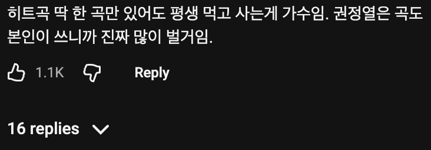
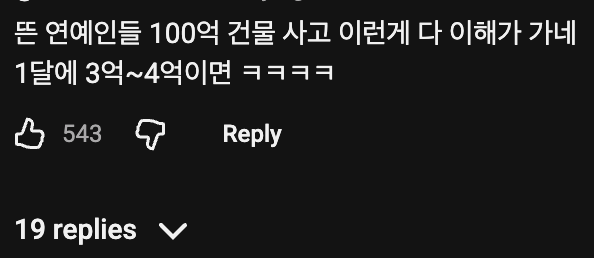
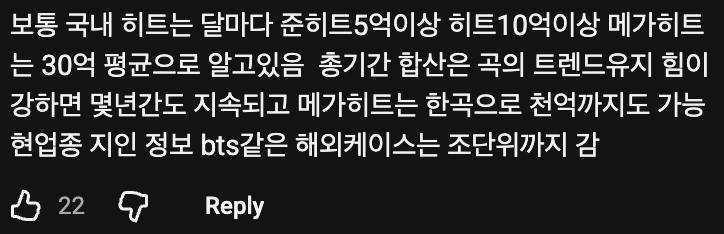
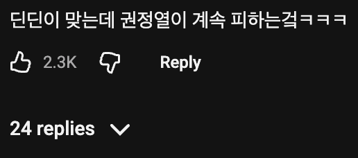
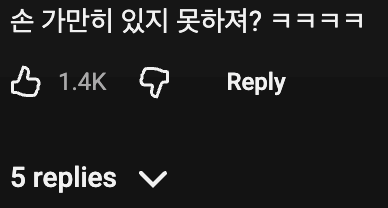

노래로 천억 단위 저작권료가 가능한가;;;;
골든 같은거?
에미넴이나 드레이크 닥터드레 칸예 이런 가수들은 가능하지않을까
한달뒤면 전세계에 깔릴 all i want for chrismas is you~ 생각하면 안될리가
궁금해서 찾아보니 진짜 all i want for chrismas는 곡 하나로 천억 넘겼네 ㅋㅋㅋ 공연 행사 이런거 제외하고 순수 저작권료로만
벚꽃엔딩도 가능할거같은데
생각보다 적은데? 수십년째 전세계에서듣는데 천억인건가?
벚꽃연금
이모티콘 같은것도 한달 억단위 천단위로 들어오는데
노래는 ㅋㅋ
딘딘이 저작권으로 월에 독일차 신차가 라고 했으니 지금 활동중인 상위챠트곡들은 저작권료로만 수십억 들어오겠네
협회 떼고, 음원유통 떼고, 회사 떼고, 작사작곡편곡노래 등등 가르고 하면 저작권료는 그렇게 크지 않다던데
혼자 다 해먹는 싱어송라이터는 존나 가져가겠지만 일반 기획사에서 다 해주는 아이돌같은 경우는 좀 많이 떠야 많이 가져감
왜냐면 다해주니까
권정열 데뷔초 모르는 사람한테 사진 보여주면 같은 사람인거 믿을까 싶다
진짜 사람이달라짐 존나멋있어졌어
관리의 중요성
방송 연애 가수등등 엔터쪽이 그나마 우리 서민들이 그나마(????) 성공할수있는 길인가봄 젠슨황이나 머스크처럼 신급아니면
ㄴ. 예체능으로 상위 1%가 저런거고 그냥 회사원 중 1% 되면 어차피 잘범. 예체능은 진짜 지옥이다
돈 잘번다는 토스 쿠팡 개발자도 연봉 기껏해야 3~5억 정도인데, 예능 1%에는 못비비지
1퍼가 아니라 0.01퍼정도 대부분은 수요층이 부족하니 저정도 못벌지
그 우리가 아는 유명한 가수 린만 해도 발라드 돈안돼서 트로트로 전향한지 오래잖어
말이 1%지 그 미만이긴함.
대체 어느나라 회사원 1퍼센트가 세금만 수백억씩 내냐
어느나라 연예인 1%가 세금 수백억 내는데? 내가 1%라고 표기한게 잘못했네 ㅋㅋ... 예체능이랑 회사원이랑 같은 백분위. 라고 하면 좀 낫나?
가수들도 탑급되야지 가능하지 아이브 장원영이 현금으로 100억번거보면 그정돈되야지 걸그룹 탑티어 물론 리센느도 그정도 갈수있다고 생각하긴하는데 삐끗하면안되고 한 4 5년은 롱런을 해야함 솔로가수론 아이유정도는되야지 아이유는 배우로도성공해서 어나더레벨이긴한데
“그나마”라고했지 쉽다고한게아님
너가 젠슨황 머스크가 될 가능성보다
그럼에도 확률적으로보면 엔터가 차라리 낫지않겠냐
젠슨황 머스크는 마이클잭슨이지... 엔터계에서도 황제가 돼야되는데
그래 네말이 맞으니까 너 하고싶은거 해
그래... 그나마 엔터계 꼭 가라 나도 실언했네 ㅋㅋ
근데 벌어도 여기저기 뜯기는게 많으니까 그런거 아닌가
예를들어?
스피키 넨도 구매 등
최근에 우원재가 어디 나와서 말하더라
쇼미 이후로 히트곡은 커녕 알려진곡 조차 거의 없는데
시차 한곡으로 여태 먹고산다고
음악이랑 게임이 한방 뜨면 돈 쓸어담는듯....
연예인들 걱정 연민 동정 ㄹㅇ 하나도 할 필요 없는 이유
진짜 창과방패네 권정열 필사의회피기동 ㅋㅋ
요즘 애들 기초적인 산수가 안되나 왜 갑자기 조가 나옴ㅋㅋㅋㅋ
한곡 1회 스트리밍당 저작권료로 저작권자에게 가창자 0.4원 작곡 등 저작권자에게 0.7원 정도, 제작자나 마스터권자에게 3원 정도 돌아감. 저작권자나 가창자가 여러명이면 이걸 또 나눠먹음.
라디오/방송 등 방송매체에다가 스트리밍 사이트가 여러개기 때문에 한곡에 도합 100만회 정도 재생된다 쳐도 싱어송라이터가 히트곡 한곡으로 월 100만원 정도 받는다고 봐야하는데
실제로 재생 100만회 되는건 쉽지 않기 때문에
히트곡 있다고 해도 월에 몇십에서 몇백정도 받는다고 봐야할듯. 그러나 이게 누적이다? 연금 수준 개꿀임
그리고 히트곡 여러개 있는 저작권자다? 진짜 매달 몇백씩 받는다고 봐야함
멜론차트 1주일 1등하면 7000만원
넘게 번다고 현업에 종사중인분한테 들음
곡 하나에서 나오는 총 매출이지 관련자 전부 그렇게 버는건 아님
프로듀싱 전반부터 가창까지 혼자 다하면 다먹긴 하겠네
바닐라아이스가 아이스아이스 베이비 한곡으로 1년 저작권료 40만불 받는다고 뉴스에서 봤음
벚꽂엔딩이건 진짜 얼마벌었을까
복붙패턴도 똑같고 이모지콘으로 차별성두려는거 네임드화임?애미고아뒤진새끼 ㅋㅋㅋ
실명가입사이트에서 정말 대담하네
ㅗ
경찰서 사건미제 3년넘게 지랄인데 신고나해봨ㅋㅋㅋ 실적안되는거 잘도조사해주겠다ㅜㅋㅋㅋ
근데 노래란게 히트곡 한곡이 그냥 평타곡 10곡 다 쓸어버려서